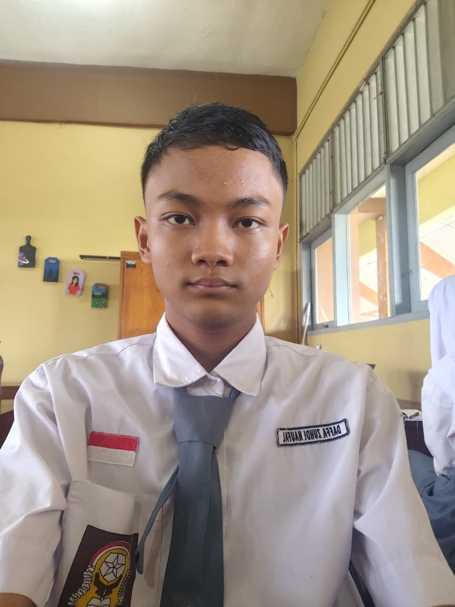
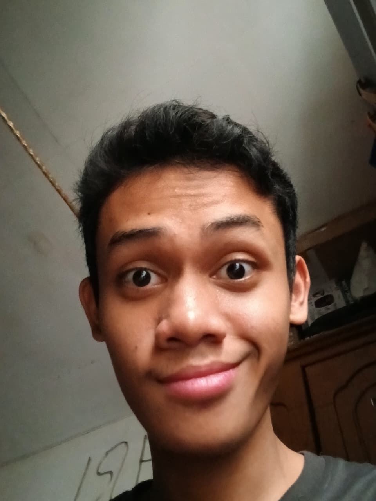
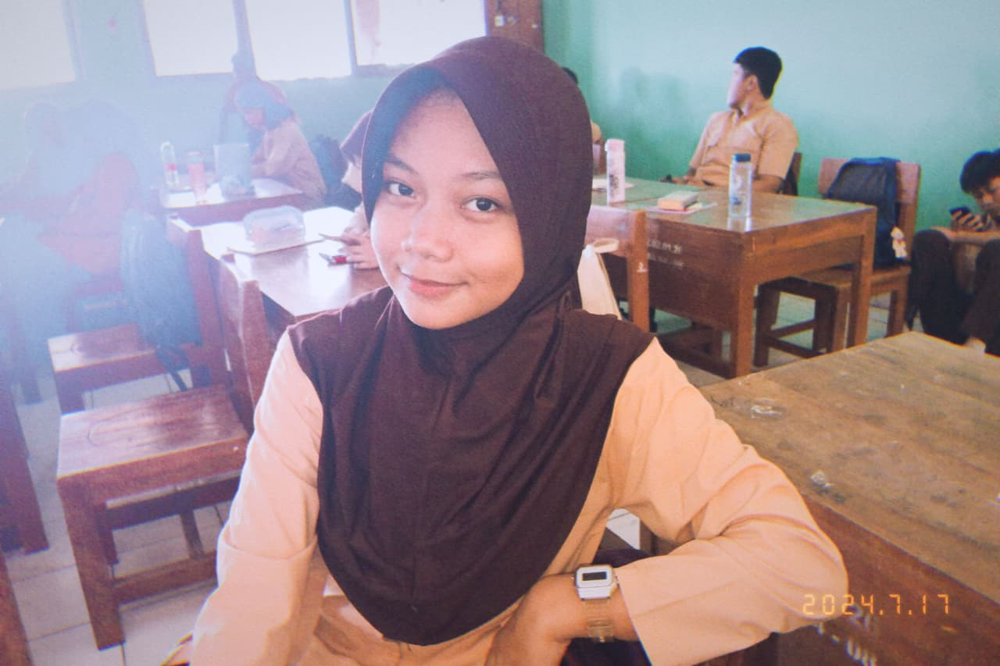
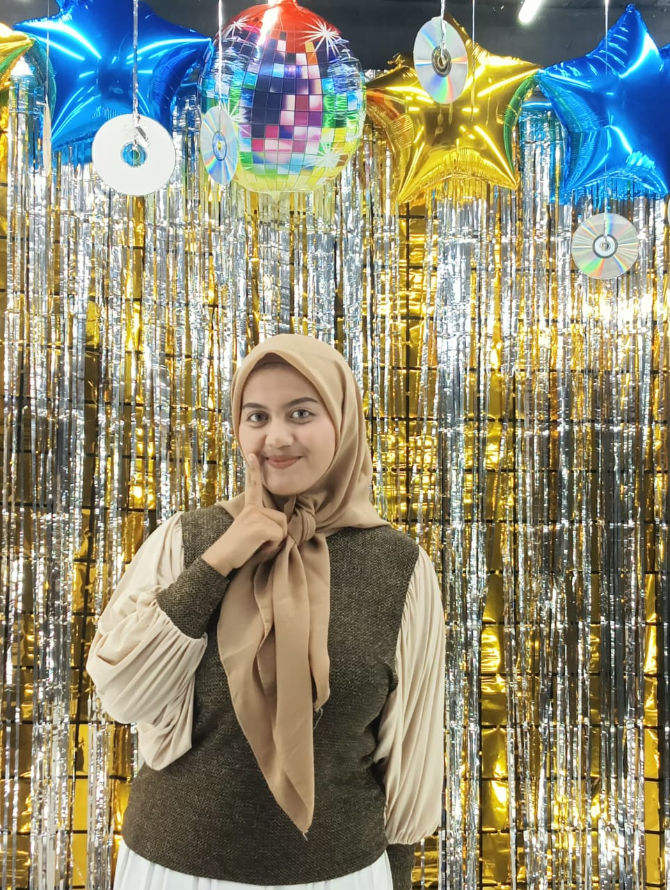
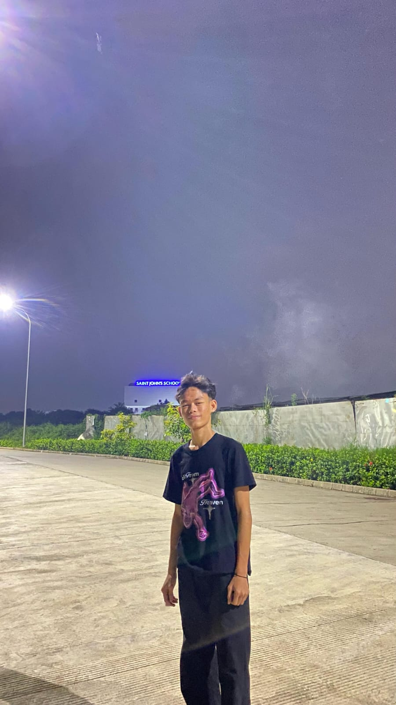
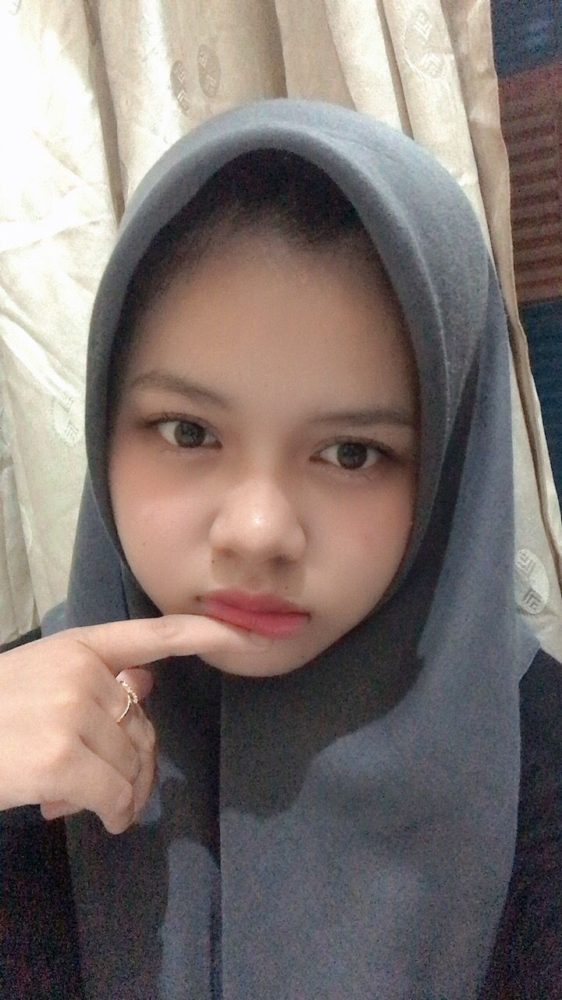
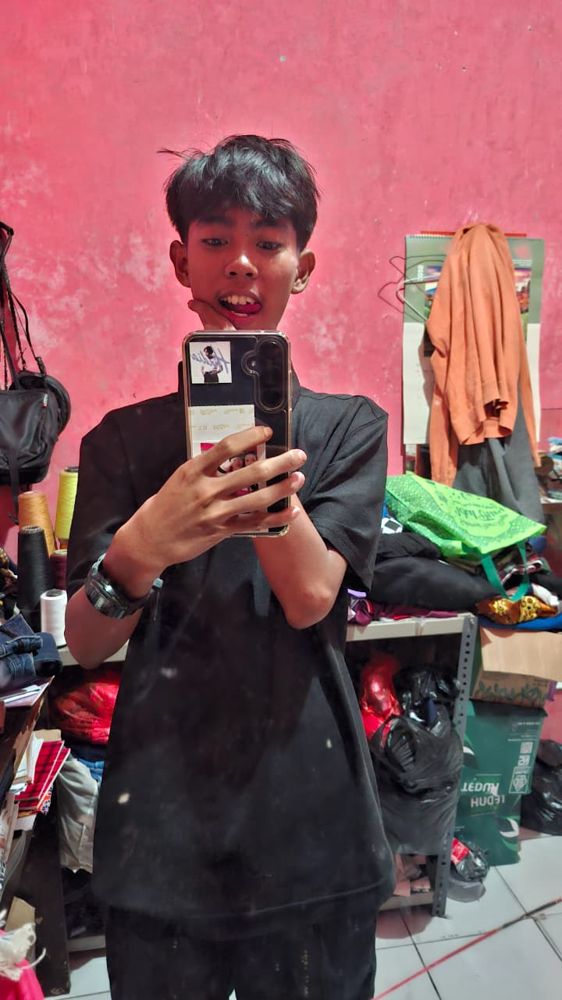

Mengenal KerjaBangkit - Visi Kami untuk Masa Depan Anda
Kami adalah tim yang berdedikasi untuk memberdayakan Anda dengan skill dan peluang karir terbaik, mengurangi pengangguran, dan membantu Anda menemukan jalan menuju kesuksesan profesional.
Visi & Misi Kami
Visi
Menjadi platform terdepan yang memberdayakan individu untuk mencapai potensi karir penuh mereka, menciptakan dampak positif dalam mengurangi pengangguran melalui akses mudah ke edukasi, informasi pekerjaan, dan pengembangan skill yang relevan.
Misi
- Menyediakan informasi lowongan pekerjaan yang akurat, terstruktur, dan mudah diakses untuk berbagai bidang dan tingkatan.
- Mengembangkan dan membagikan sumber daya edukasi berkualitas tinggi untuk meningkatkan soft skill dan hard skill yang dibutuhkan di pasar kerja.
- Memfasilitasi pemahaman tentang tantangan umum dalam pencarian kerja dan menawarkan solusi praktis melalui tutorial dan panduan.
- Membantu pengguna menemukan jalur karir yang selaras dengan minat dan bakat mereka, serta menyediakan alat untuk mempersiapkan diri secara optimal.
- Membangun komunitas yang suportif bagi para pencari kerja untuk berbagi pengalaman dan mendapatkan motivasi.
Anggota Tim Kami

Daffa Zuhdi Naufal
Kelas: XI-6

Muhammad Aditya
Kelas: XI-6

Najmi Nadhilah
Kelas: XI-6

Ariny Mauliddia
Kelas: XI-6

Mohamad Iqbal
Kelas: XI-6

Mawar
Kelas: XI-6
Zaskia Putri Febrianti
Kelas: XI-6

Alea Hoshi Maulana
Kelas: XI-6
Informasi Kontak Pemilik Website
Untuk pertanyaan umum, kerjasama, atau informasi lebih lanjut, silakan hubungi kami melalui email: